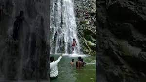

Places to Visit
Aasirgarh Fort
"Where History and Legend Meet"
Asirgarh Fort, Burhanpur Overview
Located in the historical town of Burhanpur in Madhya Pradesh, Asirgarh Fort stands
impegnable in the Satpura Ranges. It was built by the a zamidar (Land owner) knwon as Asa
Ahir of the Ahir dynasty in the 15th Century. The fort, spread over a total area of more than
60 acres, is situated about 20 kilometres to the north of Burhanpur. It may appear to be a
single large fort, but is, in fact, a colleon of 3 forts known as called Asirgarh, Karmargarh,
whereas the third part is called Malaygarh.
Even though the Asirgarh Fort is now in ruins,
it still holds immense importance for history
lovers as well as for those who wish to simply explore the beauty of a monument that once
held esteem and prestige, but unfortunately could not escape the ravages of time. It is
known to be an impregnable fort and has never been taken by force!
Because the Asirgarh Fort demands a pass through the Satpuras that connects the valleys
of the Narmada and the Tapti Rivers, which is one of the most important routes from north
India into the Deccan, it is also popularly known as the 'Babe Deccan' or the 'Key to the
Deccan'. In fact, during the Mughal era, it was widely agreed that the Deccan started from here,
while the area that lay between Asirgarh and Delhi was considered to be Hindustan.
The majestic fort was earlier known by the name of Asa Ahir Garh, on account of who built
this grand structure. The name of the fort, however, was later changed to its present name.
The fort is about 259 metres high and is at the height of 701 metres from the sea level. Inside
this grand fort, one can also find a mosque, gurudwara and a temple that is dedicated to
Lord Shiva. Legend has it that the fort is haunted by the presence of Ashwattha - The
ill-fated warrior prince from the epic Mahabharata who was doomed with a curse by Lord
Krishna that he will remain immortal with no one to care and care for!
Black Taj

At a distance of 7 km from Burhanpur Railway Station, the Tomb of Shah Nawaz
Khan or Black Taj is a mausoleum located in the Teressa locality of Burhanpur, Madhya Pradesh
. Situated on the banks of the Utavali River, it is one of the best Burhanpur attractions.
The Tomb of Shahnawaz Khan is called 'Kala Taj Mahal' or 'Black Taj Mahal' by the locals
and was built between 1622 and 1623 AD. Shah Nawaz Khan was the eldest son of
Abdul Rahim Khankhana. He was brought up in Burhanpur itself. Seeing his bravery,
he was made the commander of the Mughal army. He died at the age of 44, buried
here on the banks of the Utawali river in Burhanpur.
It also houses the tomb of Shahnawaz Khan's wife.
It is a beautiful monument, shaped like the Taj though built on a much
smaller scale. It is made of locally found black-colored stone hence the
name Black Taj. Surrounded by a garden, the mausoleum is a big domed structure
typical of Mughal architecture. The monument is square in shape with a central
dome and has hexagonal minarets on the four corners with arched verandas running all
around it. Inside the walls of the dome have beautiful paintings. But, the actual
grave of Shah Nawaz Khan is below the Mausoleum and has a small stairway that leads
to the actual grave. Next to it is a ruined monument called Paandan Mahal because it
is shaped like a paandan.
Shahi Quila

The Shahi Qila is a majestic palace in Burhanpur, located to the east of the Tapti River.
History of the Shahi Qila states that it was originally built by the Farooqui rulers and resided
by Shah Jahan, at a time when he was the governor of Burhanpur. Shah Jahan became so fond
of the fort that it was here, in Shahi Qila that he establishes his court for the
first three years of his ascending the throne.Shah Jahan spent a considerable
time in this city, and helped add to the Shahi Qila. Diwan-i-Aam and Diwan-i-Khas
were built on the terrace of the Qila.
The main attraction at the palace is the hamam or the royal bath.
It was specifically built for Shah Jahan’s wife, Begum Mumtaz Mahal, so that she could
enjoy a luxurious bath in water scented with khus, saffron and rose petals.
Hammam Khana was constructed during Mughal Period.
One of the amazing
facts is that the Taj Mahal was originally supposed to have been built at Burhanpur.
The site chosen for it still lies vacant near the tapti river. Mumtaz, in whose memory
the Taj Mahal
was built, died in burhanpur while giving birth to her fourteenth child
Kundi Bhandara
WATER SUPPLY SYSTEM KUNDI BHANDARA :- Mughal engineers gifted
exemplary water supply system to Burhanpur town which is still actively
used in town. They made 8 water-supply system which provides sufficient
water inflow for
town in past. They are counted among some
highly appreciated engineering works done
during Mughal
dynasty in India. Most of the work done during rule of Mughal
emperors
Shahjahan & Aurangzeb. Their are number of underground
water flow channels in Satpura
hills that avails water to Tapti river.
Mughal engineers controlled those water channels at
3 points to develop water-reservoirs which are
known by the names “Mool Bhandara”, “Sukha Bhandara”
and “Chintaharan Bhandara”. They are located in north of Burhanpur
town and are at a height of approx. 100 feet from town land.
Badalkhora Waterfall

Badalkhora Waterfall is an awesome place to visit with friends and family
it is located about 50 kms from Burhanpur City
It is also a tourist attraction from decades
One getd amazing experience Visiting here in summer